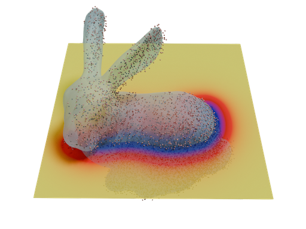

Sidhanth Holalkere
I'm interested in geometric machine learning, particularly for applications in graphics and science. I received my B.A. in Mathematics and Computer Science from Cornell University. I also interned at Microsoft Research with Kevin Yang on cryo-EM reconstruction.
Preprints and Publications
* indicates equal contribution

Stochastic Poisson Surface Reconstruction with One Solve using Geometric Gaussian Processes
Under Review
Sidhanth Holalkere, David Bindel, Silvia Sellán, Alexander Terenin